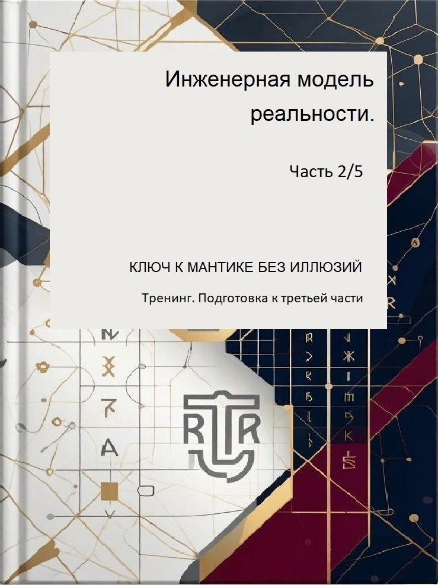

Книга 2.5
Ключ к мантике
7-дневный переход от навигации к диалогу с рунами

🗝️ Для кого этот тренинг
В первой книге вы получили знание: руны — это этапы процесса, три времени — матрица.
Во второй книге вы превратили знание в навык: научились определять своё состояние без рун.
Третья книга — «Мантика без иллюзий» — потребует другого уровня мастерства: практики вопроса.
Этот тренинг — Ключ. Он не заменит третью книгу, но подготовит вас к ней. За 7 дней вы превратите знания в навыки, которые потребуются для честного диалога.
В первой книге вы получили знание: руны — это этапы процесса, три времени — матрица.
Во второй книге вы превратили знание в навык: научились определять своё состояние без рун.
Третья книга — «Мантика без иллюзий» — потребует другого уровня мастерства: практики вопроса.
Этот тренинг — Ключ. Он не заменит третью книгу, но подготовит вас к ней. За 7 дней вы превратите знания в навыки, которые потребуются для честного диалога.
Что вы освоите за 7 дней
- ✅ Отличать момент, когда навигация заканчивается
- ✅ Формулировать вопросы, на которые руны могут ответить
- ✅ Входить в состояние «чистого листа» без тревоги
- ✅ Интерпретировать ответы без страха и иллюзий
- ✅ Переводить ответы рун в реальные действия
Структура тренинга
День 0Подготовка
День 1Когда навигация заканчивается
День 2Первый вопрос к рунам (без рун)
День 3Состояние «чистого листа»
День 4Одна руна — самый честный расклад
День 5Три руны — «То, что есть → То, что происходит → То, что должно быть»
День 6Как услышать ответ, а не свой страх
День 7Интеграция: от ответа к действию
Как работать с этим тренингом
- Формат: 7 дней, по одному упражнению в день
- Время: 10–20 минут в день
- Инструменты: Ваш Дневник навигации, ручка, тишина
- Правило: Не перескакивайте. Каждый день — это шаг. Пропустили день — вернитесь
📝 Важно: В конце каждого дня есть поле для записи. Записывайте обязательно. Без записей тренинг — просто чтение. С записями — практика.
🧠 Нужны ли вам руны для этого тренинга?
Нет. Этот тренинг — про понимание, а не про инструменты. Вы учитесь формулировать вопросы, входить в состояние диалога и интерпретировать ответы. Всё это можно делать с помощью книг серии и вашего Дневника.
Физические руны здесь — лишь возможное дополнение, а не обязательное условие.
Нет. Этот тренинг — про понимание, а не про инструменты. Вы учитесь формулировать вопросы, входить в состояние диалога и интерпретировать ответы. Всё это можно делать с помощью книг серии и вашего Дневника.
Физические руны здесь — лишь возможное дополнение, а не обязательное условие.
Чек-лист готовности
- ✅ Я знаю названия и значения 24 рун как этапов процесса
- ✅ Я могу определить своё состояние в конкретной ситуации
- ✅ Я понимаю, что делать в каждом состоянии (сужать, выбирать, останавливаться)
- ✅ Я веду или вёл Дневник навигации хотя бы несколько дней
- ✅ Я сталкивался с ситуацией, когда знал своё состояние, но не знал, что делать дальше
⚠️ Если вы отметили меньше 4 пунктов из 5 — остановитесь. Откройте книгу «Психология рун. Руническая навигация». Пройдите её заново. Ключ подождёт.
Карта перехода: навигация или мантика
- Если вы знаете своё состояние и чётко понимаете, что делать → Навигация (Книга 2)
- Если вы знаете своё состояние, но не знаете, что делать, или боитесь делать → Мантика (Книга 3)
- Если вы не знаете своё состояние → Сначала Навигация (Книга 2), потом Мантика (Книга 3)
- Если вы получили ответ от рун, но не знаете, что с ним делать → Вернуться к Навигации (Книга 2)
«Не бойтесь спрашивать. Но не забывайте действовать.»
Этот тренинг — подарок для читателей серии «Инженерная модель реальности».